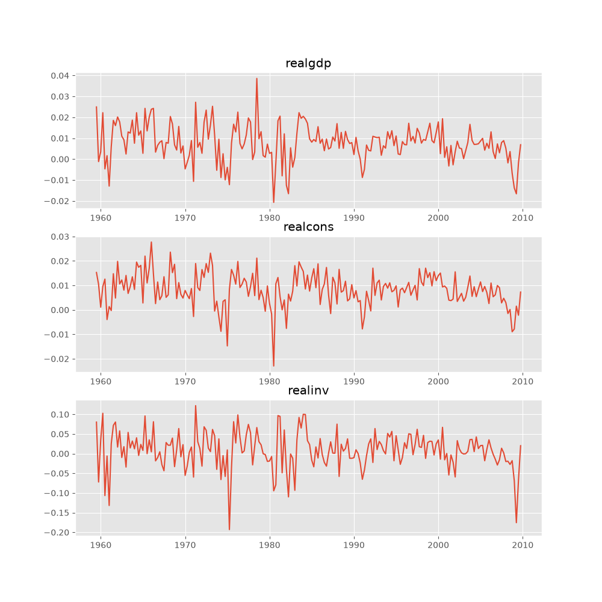
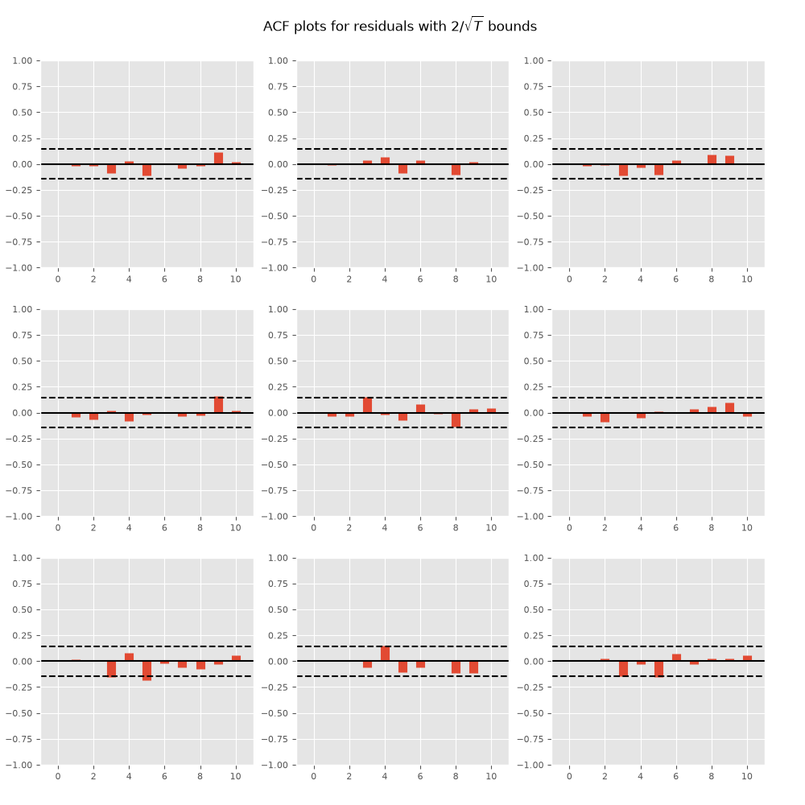
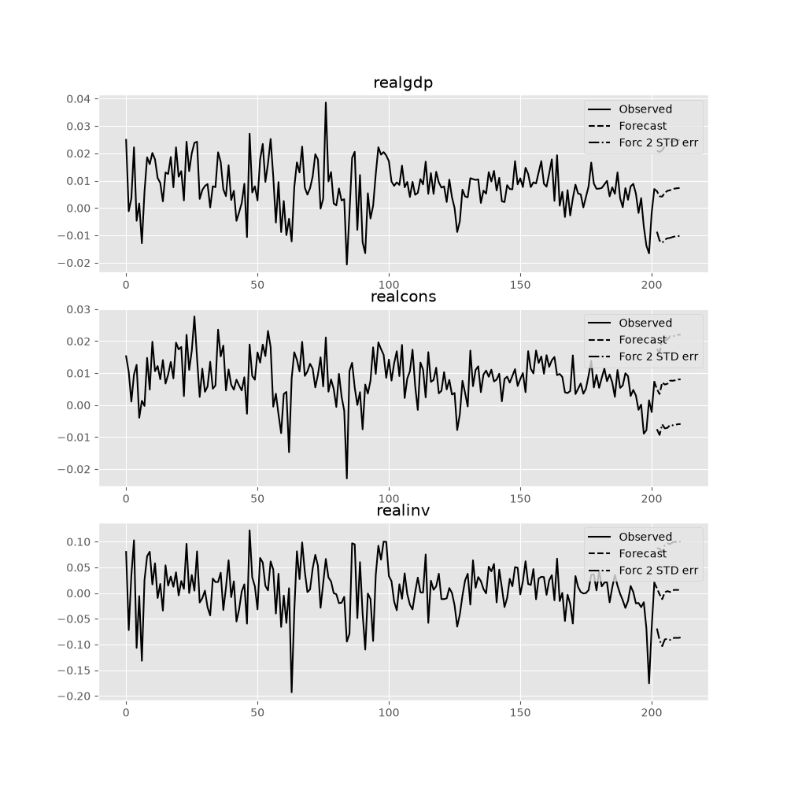
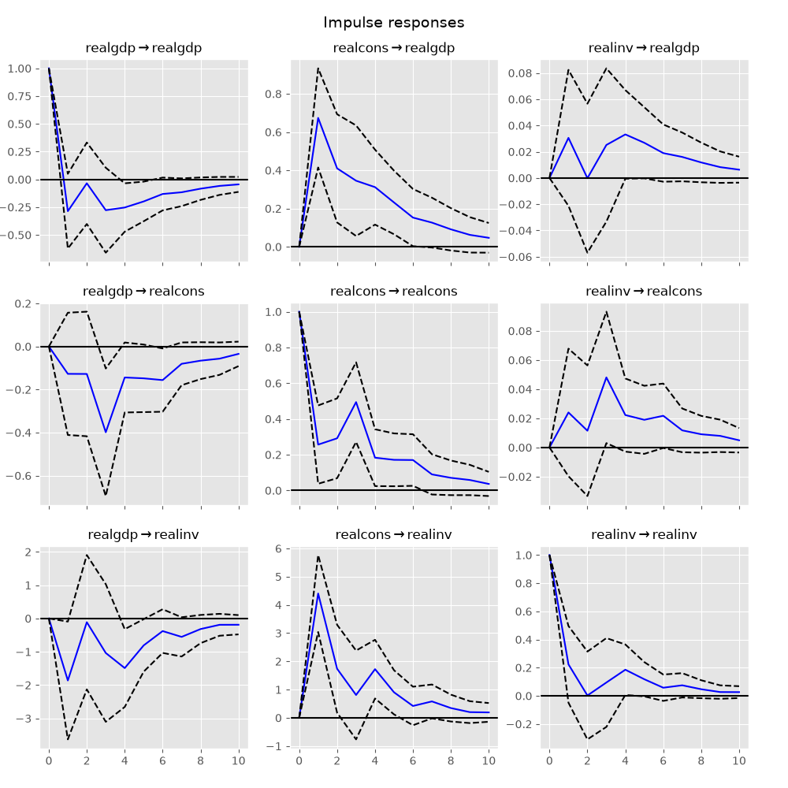
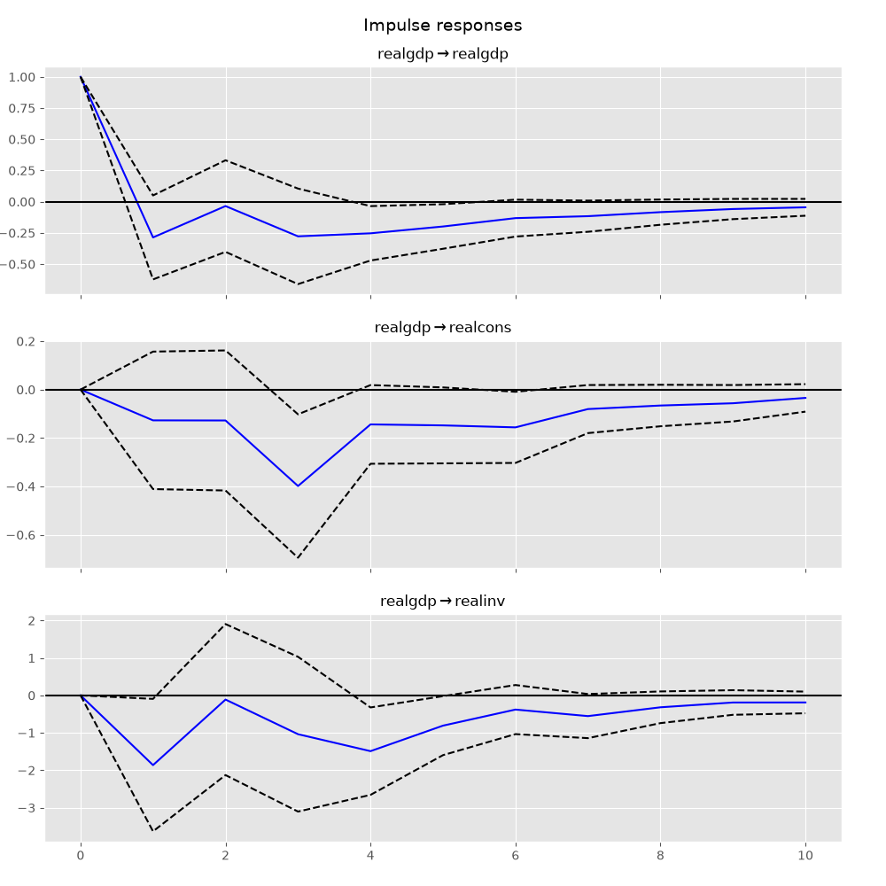
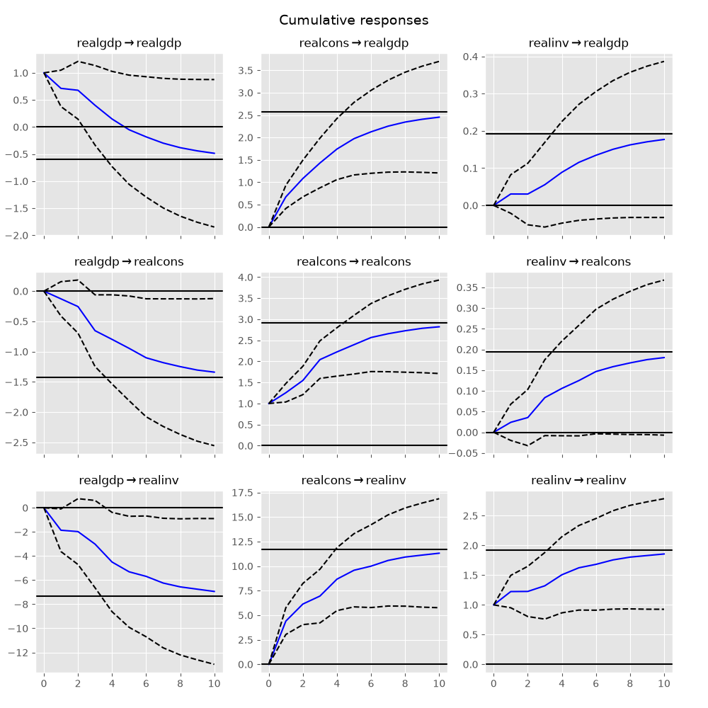
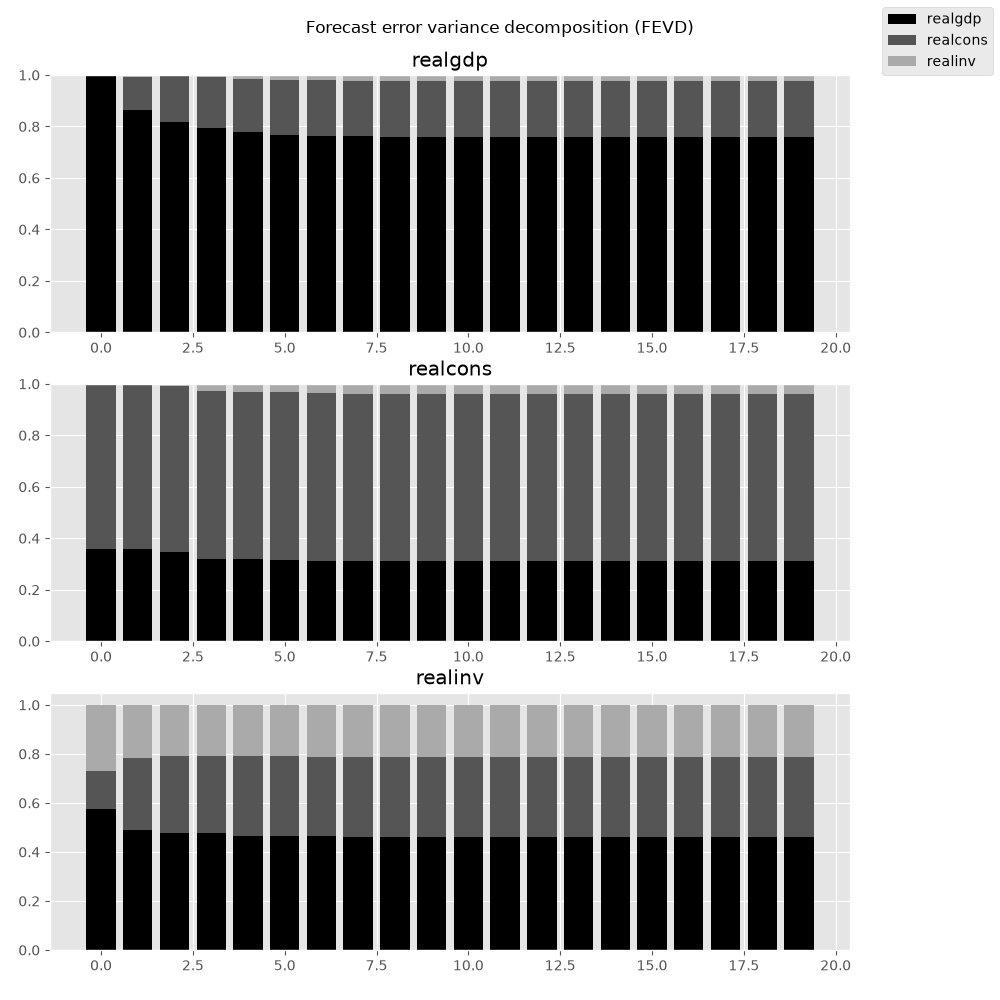

Vector Autoregressions tsa.vector_ar#
statsmodels.tsa.vector_ar contains methods that are useful
for simultaneously modeling and analyzing multiple time series using
Vector Autoregressions (VAR) and
Vector Error Correction Models (VECM).
VAR(p) processes#
We are interested in modeling a \(T \times K\) multivariate time series \(Y\), where \(T\) denotes the number of observations and \(K\) the number of variables. One way of estimating relationships between the time series and their lagged values is the vector autoregression process:
where \(A_i\) is a \(K \times K\) coefficient matrix.
We follow in large part the methods and notation of Lutkepohl (2005), which we will not develop here.
Model fitting#
Note
The classes referenced below are accessible via the
statsmodels.tsa.api module.
To estimate a VAR model, one must first create the model using an ndarray of homogeneous or structured dtype. When using a structured or record array, the class will use the passed variable names. Otherwise they can be passed explicitly:
# some example data
In [1]: import numpy as np
In [2]: import pandas
In [3]: import statsmodels.api as sm
In [4]: from statsmodels.tsa.api import VAR
In [5]: mdata = sm.datasets.macrodata.load_pandas().data
# prepare the dates index
In [6]: dates = mdata[['year', 'quarter']].astype(int).astype(str)
In [7]: quarterly = dates["year"] + "Q" + dates["quarter"]
In [8]: from statsmodels.tsa.base.datetools import dates_from_str
In [9]: quarterly = dates_from_str(quarterly)
In [10]: mdata = mdata[['realgdp','realcons','realinv']]
In [11]: mdata.index = pandas.DatetimeIndex(quarterly)
In [12]: data = np.log(mdata).diff().dropna()
# make a VAR model
In [13]: model = VAR(data)
Note
The VAR class assumes that the passed time series are
stationary. Non-stationary or trending data can often be transformed to be
stationary by first-differencing or some other method. For direct analysis of
non-stationary time series, a standard stable VAR(p) model is not
appropriate.
To actually do the estimation, call the fit method with the desired lag order. Or you can have the model select a lag order based on a standard information criterion (see below):
In [14]: results = model.fit(2)
In [15]: results.summary()
Out[15]:
Summary of Regression Results
==================================
Model: VAR
Method: OLS
Date: Thu, 25, Jun, 2026
Time: 00:37:08
--------------------------------------------------------------------
No. of Equations: 3.00000 BIC: -27.5830
Nobs: 200.000 HQIC: -27.7892
Log likelihood: 1962.57 FPE: 7.42129e-13
AIC: -27.9293 Det(Omega_mle): 6.69358e-13
--------------------------------------------------------------------
Results for equation realgdp
==============================================================================
coefficient std. error t-stat prob
------------------------------------------------------------------------------
const 0.001527 0.001119 1.365 0.172
L1.realgdp -0.279435 0.169663 -1.647 0.100
L1.realcons 0.675016 0.131285 5.142 0.000
L1.realinv 0.033219 0.026194 1.268 0.205
L2.realgdp 0.008221 0.173522 0.047 0.962
L2.realcons 0.290458 0.145904 1.991 0.047
L2.realinv -0.007321 0.025786 -0.284 0.776
==============================================================================
Results for equation realcons
==============================================================================
coefficient std. error t-stat prob
------------------------------------------------------------------------------
const 0.005460 0.000969 5.634 0.000
L1.realgdp -0.100468 0.146924 -0.684 0.494
L1.realcons 0.268640 0.113690 2.363 0.018
L1.realinv 0.025739 0.022683 1.135 0.257
L2.realgdp -0.123174 0.150267 -0.820 0.412
L2.realcons 0.232499 0.126350 1.840 0.066
L2.realinv 0.023504 0.022330 1.053 0.293
==============================================================================
Results for equation realinv
==============================================================================
coefficient std. error t-stat prob
------------------------------------------------------------------------------
const -0.023903 0.005863 -4.077 0.000
L1.realgdp -1.970974 0.888892 -2.217 0.027
L1.realcons 4.414162 0.687825 6.418 0.000
L1.realinv 0.225479 0.137234 1.643 0.100
L2.realgdp 0.380786 0.909114 0.419 0.675
L2.realcons 0.800281 0.764416 1.047 0.295
L2.realinv -0.124079 0.135098 -0.918 0.358
==============================================================================
Correlation matrix of residuals
realgdp realcons realinv
realgdp 1.000000 0.603316 0.750722
realcons 0.603316 1.000000 0.131951
realinv 0.750722 0.131951 1.000000
Several ways to visualize the data using matplotlib are available.
Plotting input time series:
In [16]: results.plot()
Out[16]: <Figure size 1000x1000 with 3 Axes>

Plotting time series autocorrelation function:
In [17]: results.plot_acorr()
Out[17]: <Figure size 1000x1000 with 9 Axes>

Lag order selection#
Choice of lag order can be a difficult problem. Standard analysis employs
likelihood test or information criteria-based order selection. We have
implemented the latter, accessible through the VAR class:
In [18]: model.select_order(15)
Out[18]: <statsmodels.tsa.vector_ar.var_model.LagOrderResults at 0x7f1ffe1497f0>
When calling the fit function, one can pass a maximum number of lags and the order criterion to use for order selection:
In [19]: results = model.fit(maxlags=15, ic='aic')
Forecasting#
The linear predictor is the optimal h-step ahead forecast in terms of mean-squared error:
We can use the forecast function to produce this forecast. Note that we have to specify the “initial value” for the forecast:
In [20]: lag_order = results.k_ar
In [21]: results.forecast(data.values[-lag_order:], 5)
Out[21]:
array([[ 0.0062, 0.005 , 0.0092],
[ 0.0043, 0.0034, -0.0024],
[ 0.0042, 0.0071, -0.0119],
[ 0.0056, 0.0064, 0.0015],
[ 0.0063, 0.0067, 0.0038]])
The forecast_interval function will produce the above forecast along with asymptotic standard errors. These can be visualized using the plot_forecast function:
In [22]: results.plot_forecast(10)
Out[22]: <Figure size 1000x1000 with 3 Axes>

Class Reference#
|
Fit VAR(p) process and do lag order selection |
|
Class represents a known VAR(p) process |
|
Estimate VAR(p) process with fixed number of lags |
Post-estimation Analysis#
Several process properties and additional results after estimation are available for vector autoregressive processes.
|
Results class for choosing a model's lag order. |
|
Results class for hypothesis tests. |
|
Results class for the Jarque-Bera-test for nonnormality. |
|
Results class for the Portmanteau-test for residual autocorrelation. |
Impulse Response Analysis#
Impulse responses are of interest in econometric studies: they are the estimated responses to a unit impulse in one of the variables. They are computed in practice using the MA(\(\infty\)) representation of the VAR(p) process:
We can perform an impulse response analysis by calling the irf function on a VARResults object:
In [23]: irf = results.irf(10)
These can be visualized using the plot function, in either orthogonalized or non-orthogonalized form. Asymptotic standard errors are plotted by default at the 95% significance level, which can be modified by the user.
Note
Orthogonalization is done using the Cholesky decomposition of the estimated error covariance matrix \(\hat \Sigma_u\) and hence interpretations may change depending on variable ordering.
In [24]: irf.plot(orth=False)
Out[24]: <Figure size 1000x1000 with 9 Axes>

Note the plot function is flexible and can plot only variables of interest if so desired:
In [25]: irf.plot(impulse='realgdp')
Out[25]: <Figure size 1000x1000 with 3 Axes>

The cumulative effects \(\Psi_n = \sum_{i=0}^n \Phi_i\) can be plotted with the long run effects as follows:
In [26]: irf.plot_cum_effects(orth=False)
Out[26]: <Figure size 1000x1000 with 9 Axes>

|
Impulse response analysis class. |
Forecast Error Variance Decomposition (FEVD)#
Forecast errors of component j on k in an i-step ahead forecast can be decomposed using the orthogonalized impulse responses \(\Theta_i\):
These are computed via the fevd function up through a total number of steps ahead:
In [27]: fevd = results.fevd(5)
In [28]: fevd.summary()
FEVD for realgdp
realgdp realcons realinv
0 1.000000 0.000000 0.000000
1 0.864889 0.129253 0.005858
2 0.816725 0.177898 0.005378
3 0.793647 0.197590 0.008763
4 0.777279 0.208127 0.014594
FEVD for realcons
realgdp realcons realinv
0 0.359877 0.640123 0.000000
1 0.358767 0.635420 0.005813
2 0.348044 0.645138 0.006817
3 0.319913 0.653609 0.026478
4 0.317407 0.652180 0.030414
FEVD for realinv
realgdp realcons realinv
0 0.577021 0.152783 0.270196
1 0.488158 0.293622 0.218220
2 0.478727 0.314398 0.206874
3 0.477182 0.315564 0.207254
4 0.466741 0.324135 0.209124
They can also be visualized through the returned FEVD object:
In [29]: results.fevd(20).plot()
Out[29]: <Figure size 1000x1000 with 3 Axes>

|
Compute and plot Forecast error variance decomposition and asymptotic standard errors |
Statistical tests#
A number of different methods are provided to carry out hypothesis tests about the model results and also the validity of the model assumptions (normality, whiteness / “iid-ness” of errors, etc.).
Granger causality#
One is often interested in whether a variable or group of variables is “causal”
for another variable, for some definition of “causal”. In the context of VAR
models, one can say that a set of variables are Granger-causal within one of the
VAR equations. We will not detail the mathematics or definition of Granger
causality, but leave it to the reader. The VARResults object has the
test_causality method for performing either a Wald (\(\chi^2\)) test or an
F-test.
In [30]: results.test_causality('realgdp', ['realinv', 'realcons'], kind='f')
Out[30]: <statsmodels.tsa.vector_ar.hypothesis_test_results.CausalityTestResults at 0x7f1ffe0812b0>
Normality#
As pointed out in the beginning of this document, the white noise component
\(u_t\) is assumed to be normally distributed. While this assumption
is not required for parameter estimates to be consistent or asymptotically
normal, results are generally more reliable in finite samples when residuals
are Gaussian white noise. To test whether this assumption is consistent with
a data set, VARResults offers the test_normality method.
In [31]: results.test_normality()
Out[31]: <statsmodels.tsa.vector_ar.hypothesis_test_results.NormalityTestResults at 0x7f1ffe081940>
Whiteness of residuals#
To test the whiteness of the estimation residuals (this means absence of
significant residual autocorrelations) one can use the test_whiteness
method of VARResults.
|
Results class for hypothesis tests. |
|
Results class for Granger-causality and instantaneous causality. |
|
Results class for the Jarque-Bera-test for nonnormality. |
|
Results class for the Portmanteau-test for residual autocorrelation. |
Structural Vector Autoregressions#
There are a matching set of classes that handle some types of Structural VAR models.
|
Fit VAR and then estimate structural components of A and B, defined: |
|
Class represents a known SVAR(p) process |
|
Estimate VAR(p) process with fixed number of lags |
Vector Error Correction Models (VECM)#
Vector Error Correction Models are used to study short-run deviations from
one or more permanent stochastic trends (unit roots). A VECM models the
difference of a vector of time series by imposing structure that is implied
by the assumed number of stochastic trends. VECM is used to
specify and estimate these models.
A VECM(\(k_{ar}-1\)) has the following form
where
as described in chapter 7 of [1].
A VECM(\(k_{ar} - 1\)) with deterministic terms has the form
In \(D^{co}_{t-1}\) we have the deterministic terms which are inside
the cointegration relation (or restricted to the cointegration relation).
\(\eta\) is the corresponding estimator. To pass a deterministic term
inside the cointegration relation, we can use the exog_coint argument.
For the two special cases of an intercept and a linear trend there exists
a simpler way to declare these terms: we can pass "ci" and "li"
respectively to the deterministic argument. So for an intercept inside
the cointegration relation we can either pass "ci" as deterministic
or np.ones(len(data)) as exog_coint if data is passed as the
endog argument. This ensures that \(D_{t-1}^{co} = 1\) for all
\(t\).
We can also use deterministic terms outside the cointegration relation.
These are defined in \(D_t\) in the formula above with the
corresponding estimators in the matrix \(C\). We specify such terms by
passing them to the exog argument. For an intercept and/or linear trend
we again have the possibility to use deterministic alternatively. For
an intercept we pass "co" and for a linear trend we pass "lo" where
the o stands for outside.
The following table shows the five cases considered in [2]. The last column indicates which string to pass to the deterministic argument for each of these cases.
Case |
Intercept |
Slope of the linear trend |
deterministic |
|---|---|---|---|
I |
0 |
0 |
|
II |
\(- \alpha \beta^T \mu\) |
0 |
|
III |
\(\neq 0\) |
0 |
|
IV |
\(\neq 0\) |
\(- \alpha \beta^T \gamma\) |
|
V |
\(\neq 0\) |
\(\neq 0\) |
|
|
Class representing a Vector Error Correction Model (VECM). |
|
Johansen cointegration test of the cointegration rank of a VECM |
|
Results class for Johansen's cointegration test |
|
Compute lag order selections based on each of the available information criteria. |
|
Calculate the cointegration rank of a VECM. |
|
Class for holding estimation related results of a vector error correction model (VECM). |
|
A class for holding the results from testing the cointegration rank. |